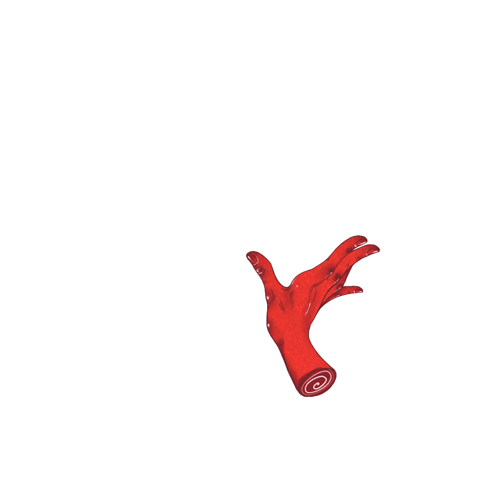
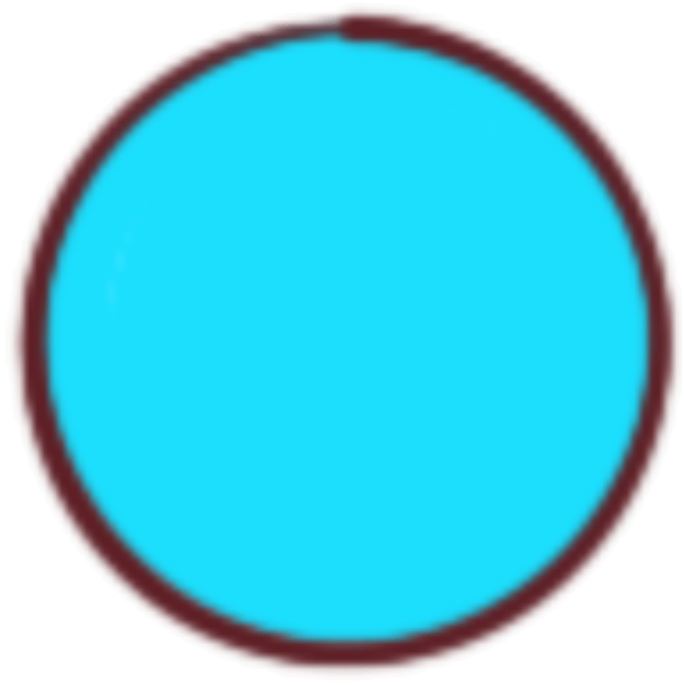

WGWJ PRESS · signature no. 01 · spring '26 · two-and-a-half colors



GRACE
WEI-LI
JUAN
a small, irregular signature — being a folded sheet of programs, looms, paintings, & other slow evidence, set in two-and-a-half colors with the third arriving by mistake.
Grace Wei-li Juan is a software engineer, a polymath, and a visual artist. She writes code that wants to be read like a poem. She writes essays that want to be compiled. She paints hands, suns, and other small evidence that the body is, on most days, still here.
She is presently interested in the space between the finished thing and the continuing thing — programs that don’t quite terminate, scarves woven over a decade, paintings of compilers in the act of parsing grief.
an irregular index of works currently underway
-
i.
hum
a slow synthesizer. One oscillator. One envelope. The patience to leave it that way.
-
ii.
slowcompiler
a compiler that takes its time. Type-checks while you make tea. Argues, occasionally, with the linter.
-
iii.
weft
a loom for plain text. Threads of prose, woven over a decade, never quite cut from the warp.
-
iv.
paintings
hands, suns, an eye, a few things she will not name. Oil and gouache, mostly. The red is real cadmium; the rest is whatever was nearest.